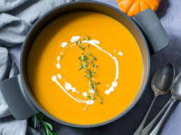

Pumpkin Soup Recipe

Meet my favorite pumpkin soup recipe. It’s super creamy (thanks mostly to the pumpkin, with a little help from coconut milk or cream) yet plenty healthy, too. It’s gently spiced, but I made sure that the pumpkin flavor shines above the rest.
Ingredients
- 2 tbsp Coles Classic Olive Oil
- 1 onion, finely chopped
- 1 leek, white part only, finely sliced
- 1 garlic clove, crushed
- 1/2 tsp ground coriander
- 1 tsp ground cumin
- 1/2 tsp freshly grated nutmeg
- 1kg peeled pumpkin, diced
- 1 large potato, peeled, diced
- 1L Massel chicken style liquid stock or vegetable liquid stock
- 1/2 cup (125ml) thin cream
Steps
- Heat oil in a large saucepan over low heat, add onion and leek and cook for 2-3 minutes, until softened but not coloured.
- Add garlic and spices and cook, stirring, for 30 seconds. Add pumpkin, potato and stock and bring to the boil. Turn heat to low, cover and simmer for 30 minutes. Allow to cool slightly, then blend in batches.
- Return soup to pan, stir through cream and reheat gently. Season and add a little more nutmeg if desired.